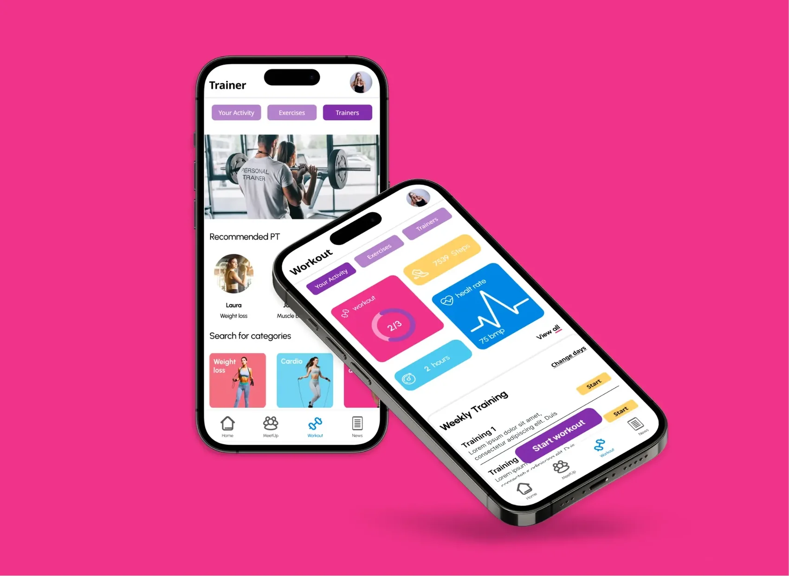
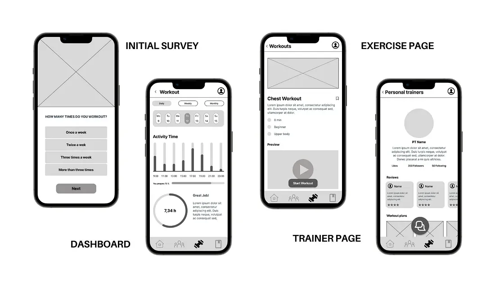
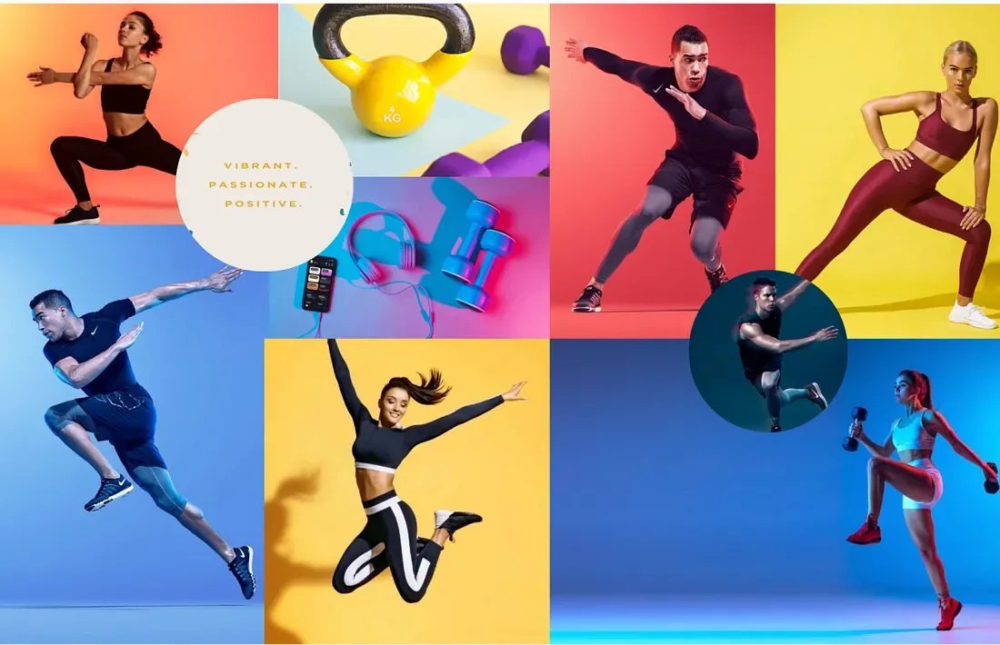
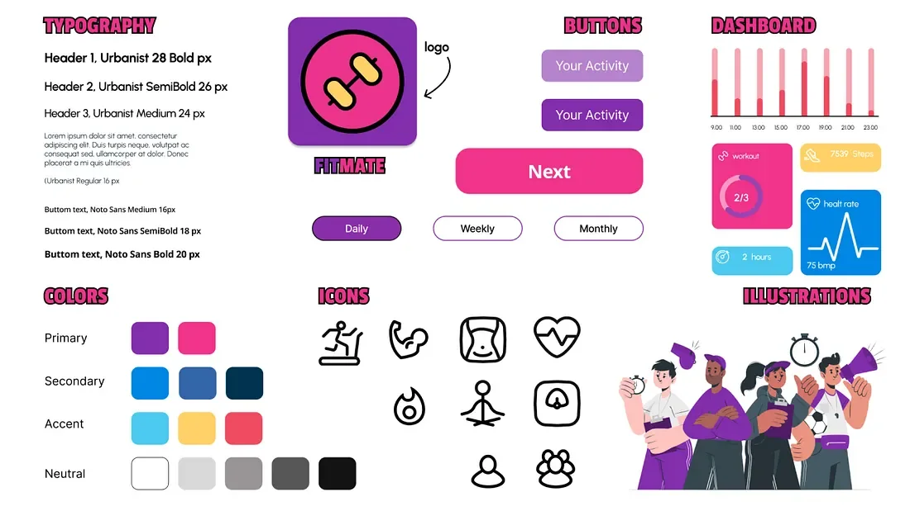
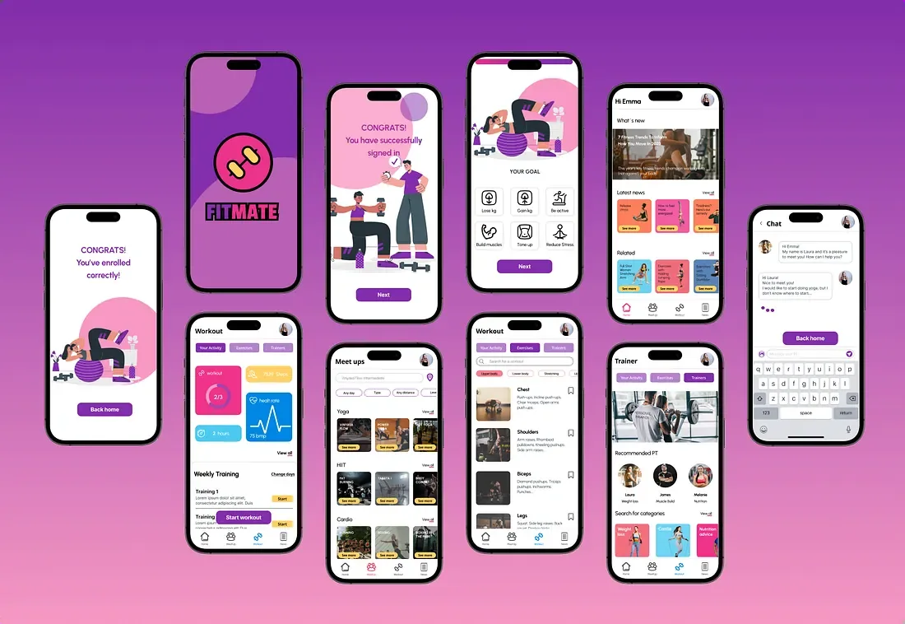
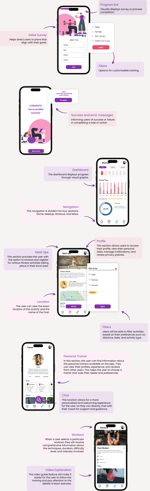

Fitmate
A fitness app built around the thing its competitors treated as an afterthought: actually meeting people.

The brief
The Daily Health Conference, a non-profit running health talks and workshops, was losing members. Its programme had not kept up with how people actually manage their health, and it wanted an app — without a clear idea of what the app should be. Diet, fitness, mental wellness: everything was on the table, which is another way of saying nothing was.
I narrowed it to fitness, and to one bet: that the gap in the market was not another tracker.
What the research changed
I ran a competitive analysis across Ejercicios en Casa, Adidas Training and MyFitnessPal. All three were strong on routines and tracking. Community, where it existed at all, meant posting your progress — not meeting anyone. Personal training meant pre-recorded video, not a person.
A survey in English and Spanish put numbers on it. People aged 26 to 35 wanted to train regularly and preferred a gym to working out at home, and what stopped them was not knowledge. It was motivation and time.
Six interviews said the same thing in their own words: they wanted accountability from other people, plans that bent to their week, and feedback from someone who knew what they were looking at. I grouped the findings into four themes — pain points, content, knowledge, motivation — and the shape of the product came out of the grouping rather than out of the brief.
Who it is for
The interviews kept describing the same person, so I gave her a name and designed against her. Emma is thirty, works full time in recruitment in London, and wants to train more than she manages to. What stops her is not willpower and not knowledge — it is that the gyms she can afford sit far enough from home that going costs her the evening, and the evening is usually already promised to someone.
“I want to be more consistent, powering up my potential, and becoming the best version of myself through exercise.”
Written down like that, the trade-off stops being a scheduling problem and becomes the brief. Every app I had looked at asked her to pick a side — train, or see people. The one useful idea in Fitmate is refusing the question.
The app
Four sections, prioritised with MoSCoW and cut to an MVP:
- Meetup — the part that does not exist elsewhere. Find people training nearby, join a session, turn the workout into the plan with friends rather than the thing competing with it.
- Workout — personalised plans and real-time guidance from certified trainers, plus tracking.
- News — fitness, nutrition and wellness, so the app has a reason to be opened on a rest day.
- Account — profile, settings, preferences.
From Crazy 8s to low-fidelity wireframes to mid-fidelity, each round tested and cut. The prototype was built in Figma.

How it looks
Urbanist for the type: modern, bold, and legible at the size a phone screen forces on you. Purple and pink carry the energy, blues calm the screens you sit with longer, yellow and magenta mark the things that matter. The icons and illustrations are custom, because stock ones would have made it look like everything else I had just spent two weeks reading.



What came next
Testing produced a clear roadmap: weekly and monthly dashboards, routines with video and full descriptions, complete trainer profiles, a proper user data page, and the news section built out.

Fitmate was the fourth project of my UX/UI bootcamp at Ironhack, made with Antón and Giulia. The writing here is mine and so is the point of view; the work was ours. The full case study is on Medium.